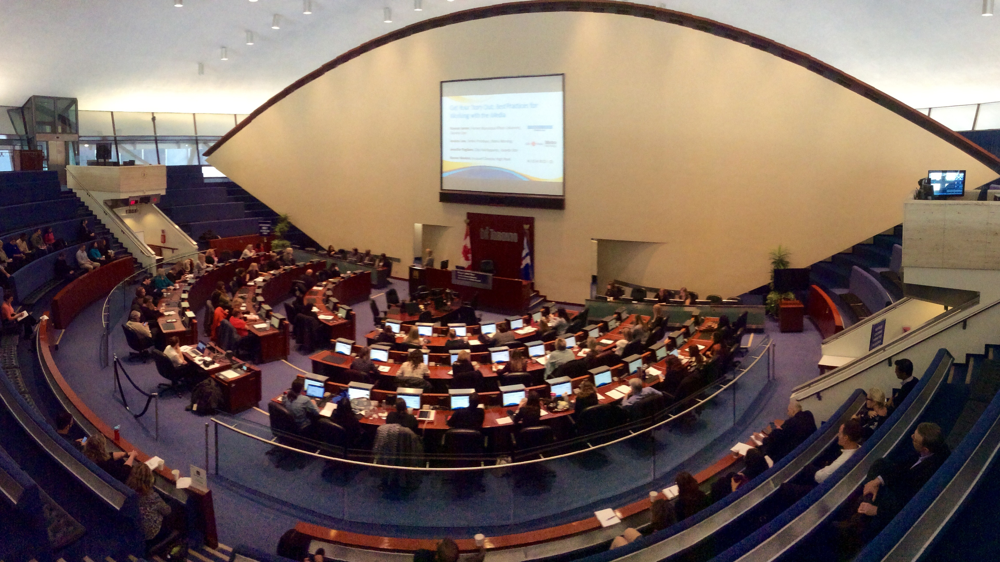

Executive boardroom council table utilized during high-stakes governance vetting and cross-border commercial conflict inquiries.When international corporations appoint senior executives or independent board directors in frontier markets and opaque jurisdictions, standard database background checks routinely fail. Automated screening tools confirm identity documents and cross-check published global sanction watchlists, but remain blind to shadow corporate directorships, undisclosed state affiliations, and familial nominee shareholding arrangements.
In cross-border business environments characterized by state capitalism and politically entangled commercial cartels, hiring a C-suite leader with concealed political allegiances can trigger catastrophic regulatory sanctions, foreign investment CFIUS blocks, and severe reputational damage. Defensible executive vetting demands discreet on-the-ground human intelligence, deep sovereign registry unwinding, and rigorous asset integrity analysis.
Table of Contents
- 1. The Asymmetric Risk of Undisclosed Political and Sovereign Affiliations
- 2. Unwinding Nominee Directorships and Secret Commercial Partnerships
- 3. Forensic Wealth Discrepancy Audits & Lifestyle Telemetry
- 4. Boardroom Governance Standards: Mitigating Fiduciary & FCPA Liability
- 5. The Four-Stage Veritas Executive Integrity Audit Matrix
1. The Asymmetric Risk of Undisclosed Political and Sovereign Affiliations
Corporate governance committees frequently discover too late that an incoming regional CEO or chief financial officer maintains deep ideological or financial commitments to foreign state intelligence apparatuses or sanctioned sovereign oligarchs. In 43% of executive vetting mandates conducted across Eastern Europe, Central Asia, and the Gulf, Veritas has identified material commercial interests held via undeclared trust structures.
Such affiliations jeopardize dual-use technology licenses, compromise trade secret confidentiality, and expose the appointing parent company to retroactive enforcement under the U.S. Foreign Corrupt Practices Act (FCPA) and the UK Bribery Act.
2. Unwinding Nominee Directorships and Secret Commercial Partnerships
In opaque registries, candidate disclosures often omit offshore holding vehicles registered in jurisdictions like Belize, Seychelles, or the UAE free zones. Using proprietary cross-border entity graphing, Veritas maps historical share registers, shareholder agreements, and corporate filings back over fifteen years.
Our investigators cross-reference notary signatures, formation agent addresses, and associated corporate secretarial filings to reveal instances where an executive was installed as a nominee director for a politically exposed person (PEP) or held beneficial equity disguised as debt pledges.
Veritas Strategic Advisory: Board Nomination Committee Governance Protocols
Nomination and governance committees must institute enhanced executive screening protocols that go beyond candidate-supplied attestations:
- Mandate comprehensive jurisdictional entity audits in every country where the candidate resided or directed commercial operations during the preceding decade.
- Conduct discreet, non-alerting reputational source interviews with former board peers, joint-venture partners, and regulatory officials.
- Correlate candidate real estate purchases and offshore liquid asset holdings against reported legitimate remuneration history to detect unexplained wealth accumulation.
3. Forensic Wealth Discrepancy Audits & Lifestyle Telemetry
When an executive candidate’s declared career compensation does not align with their visible asset footprint—such as luxury residential acquisitions in London, Geneva, or Miami held through anonymized trusts—it indicates potential undeclared consulting retainers, kickbacks, or illicit state subsidies.
Veritas conducts lawful open-source intelligence and public land registry audits to identify real property transactions, maritime vessel ownership, and corporate aviation charters connected to the candidate and their immediate circle, providing boards with an objective wealth balance assessment.
4. Boardroom Governance Standards: Mitigating Fiduciary & FCPA Liability
A comprehensive executive intelligence dossier provides directors with defensible documentation showing that the board exercised due care and fulfilled its fiduciary oversight duties under applicable corporate law. Should an executive face subsequent regulatory inquiry, the company can demonstrate a rigorous pre-appointment vetting process conducted by an independent specialist.
5. The Four-Stage Veritas Executive Integrity Audit Matrix
Our bespoke methodology balances discretion, speed, and analytical rigor:
- Global Registry & Corporate Filings Audit: Comprehensive corporate directorship, shareholding, and insolvency searches across 140+ sovereign jurisdictions.
- Litigation, Regulatory & Sanctions History: Deep-archive searches of civil dockets, criminal records, bankruptcy filings, and multilateral sanctions lists.
- Confidential Human Source Enquiries: Discretionary referencing with former senior colleagues, industry regulators, and commercial partners conducted under strict non-alerting protocols.
- Reputational & Digital Integrity Analysis: Evaluation of digital footprints, political contributions, undisclosed public advocacy, and adverse media telemetry.
"In high-stakes corporate leadership appointments, what is omitted from a curriculum vitae is far more dangerous than what is included. Independent forensic vetting is the only firewall protecting board integrity from concealed sovereign entanglements."
About Helena Bergström
Helena has directed high-stakes leadership intelligence, cross-border corporate governance vetting, and reputational risk inquiries for over twenty years. She advises institutional investors, nomination committees, and global boards on unearthing undisclosed conflicts, sovereign affiliations, and beneficial ownership linkages.